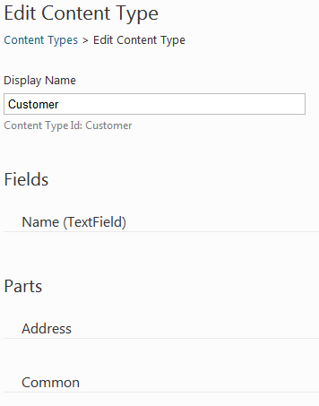
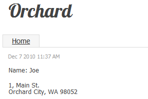
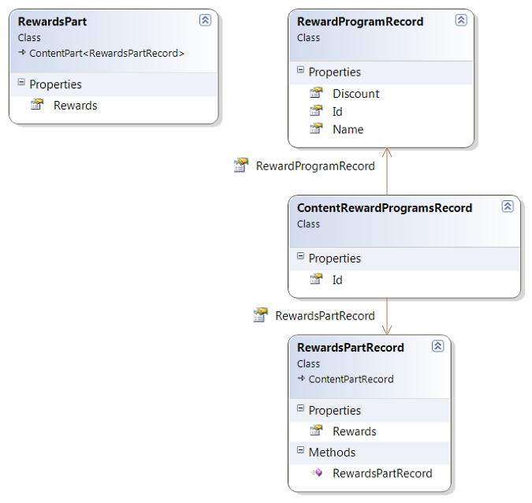
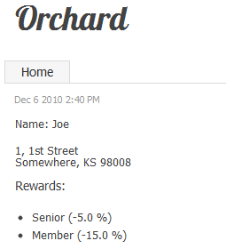
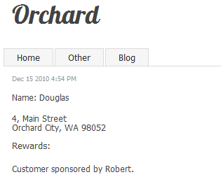

It is very common for contents to consist in part of lists or choices in lists. For example, an address can have a state or region property where the value is one in a predefined list of choices. That is a 1-n relationship. A n-n relationship could be for example a list of commercial rewards that a customer can benefit from. Orchard does of course provide support for those scenarios. This topic is going to walk you through the creation of such contents.
Building a 1-N Relationship
The model that we're going to build here consists of an Address part that can be attached for example to a Customer content type. The address part has a street address, a zip code, a city name and a state. The state is what we are going to model as a 1-n relationship to a table of states.
Note: this is clearly over-normalized, as a state in an address would usually be sufficiently well represented by a simple two-letter state code. The UI can then take care of representing the choice of that code as a constrained choice in a list of states. We are not claiming what we are building here is the correct way to represent a state in an address, but that the process exposed here is representative of what you'd follow to build a real-world 1-n association in Orchard.
Modeling the Address Part
Here is the code for the Address part:
using Orchard.ContentManagement;
namespace RelationSample.Models {
public class AddressPart : ContentPart<AddressPartRecord> {
public string Address {
get { return Retrieve(r => r.Address); }
set { Store(r => r.Address, value); }
}
public string City {
get { return Retrieve(r => r.City); }
set { Store(r => r.City, value); }
}
public StateRecord State {
get {
var rawStateRecord = Retrieve<string>("StateRecord");
return StateRecord.DeserializeStateRecord(rawStateRecord);
}
set {
var serializedStateRecord = StateRecord.SerializeStateRecord(value);
Store("StateRecord", serializedStateRecord);
}
}
public string Zip {
get { return Retrieve(r => r.Zip); }
set { Store(r => r.Zip, value); }
}
}
}
This uses stores the data in the infoset and in a database record. However you can only store simple datatypes in the infoset so you can see that State field runs some extra code to encode the class into a string.
All properties in the AddressPart are proxies to the record properties:
using Orchard.ContentManagement.Records;
namespace RelationSample.Models {
public class AddressPartRecord : ContentPartRecord {
public virtual string Address { get; set; }
public virtual string City { get; set; }
public virtual StateRecord StateRecord { get; set; }
public virtual string Zip { get; set; }
}
}
The state record class itself has a two-letter code and a name. It also has methods to serialize and deserialize its data into a string so that the AddressPart above can store its data in the infoset.
namespace RelationSample.Models {
public class StateRecord {
public virtual int Id { get; set; }
public virtual string Code { get; set; }
public virtual string Name { get; set; }
public static StateRecord DeserializeStateRecord(string rawStateRecord) {
if (rawStateRecord == null) {
return new StateRecord();
}
var stateRecordArray = rawStateRecord.Split(new[] { ',' });
return new StateRecord() {
Id = String.IsNullOrEmpty(stateRecordArray[0]) ? 0 : Int32.Parse(stateRecordArray[0]),
Code = stateRecordArray[1],
Name = stateRecordArray[2]
};
}
public static string SerializeStateRecord(StateRecord stateRecord) {
if(stateRecord == null) {
return "";
}
return String.Join(",", stateRecord.Id, stateRecord.Code, stateRecord.Name);
}
}
}
Here is a representation of what we just showed in code:

Creating the Database Tables and Part
The database structure for the model we just built can be created from a migration:
public int Create() {
SchemaBuilder.CreateTable("AddressPartRecord",
table => table
.ContentPartRecord()
.Column<string>("Address")
.Column<string>("City")
.Column<int>("StateRecord_Id")
.Column<string>("Zip")
);
SchemaBuilder.CreateTable("StateRecord",
table => table
.Column<int>("Id", column => column.PrimaryKey().Identity())
.Column<string>("Code", column => column.WithLength(2))
.Column<string>("Name")
);
ContentDefinitionManager.AlterPartDefinition("AddressPart",
builder => builder.Attachable());
return 1;
}
This migration creates an AddressPartRecord table that is a content part record (this gets us the default fields that a content part needs). It adds columns for address, city and zip that are going to be auto-mapped to our record's properties.
The interesting column here is StateRecord_Id. As you can see, its type is the same as the type of the Id column of the StateRecord class, because the system will be able to recognize this as a foreign key and to map that integer value to a StateRecord property by just following the relation. It is important here that the name of the column that will represent the relation is the name of the column on the "1" end of the relation, followed by an underscore and the name of the column of the "n" end of the relation.
There is nothing remarkable on the StateRecord table: it's just mapping Id to be the primary key and constraining the Code column to be 2 characters long.
The last statement before the return in the migration is declaring the AddressPart and making it attachable. That will enable us to attach it to any content type.
Populating the State Table
Note: this section is included for completeness of the sample code but is far from essential to understanding how to implement relationships in Orchard. Please consider it as sample data generation. If you're following along and want to import this data you can find code in the
migrations.csfile. This is included in the downloadable source code example link at the end of this guide.
Because the list of states is going to be relatively stable, I did not make them content items (although that would be entirely possible with just a little more work). Instead, I'm populating the table with a list of states right in the migration code. The migration class has a reference to the state repository:
private readonly IRepository<StateRecord> _stateRepository;
[...]
public RelationSampleDataMigration(IRepository<StateRecord> stateRepository) {
_stateRepository = stateRepository;
}
It also has the list of states to add to the database:
private readonly IEnumerable<StateRecord> _states =
new List<StateRecord> {
new StateRecord {Code = "AL", Name = "Alabama"},
new StateRecord {Code = "AK", Name = "Alaska"},
[...]
new StateRecord {Code = "WS", Name = "Western Australia"},
};
The population of the table is done by the following code:
public int UpdateFrom1() {
if (_stateRepository == null)
throw new InvalidOperationException("Couldn't find state repository.");
foreach (var state in _states) {
_stateRepository.Create(state);
}
return 2;
}
The Address Part Handler
The handler for the address part is rather uninteresting and just wires up the repository:
using Orchard.Data;
using Orchard.ContentManagement.Handlers;
using RelationSample.Models;
namespace RelationSample.Handlers {
public class AddressPartHandler : ContentHandler {
public AddressPartHandler(IRepository<AddressPartRecord> repository) {
Filters.Add(StorageFilter.For(repository));
}
}
}
The Address Part Driver
The driver is more interesting as it prepares the shapes for rendering and handles posted back admin forms.
using JetBrains.Annotations;
using Orchard.ContentManagement;
using Orchard.ContentManagement.Drivers;
using RelationSample.Models;
using RelationSample.Services;
using RelationSample.ViewModels;
namespace RelationSample.Drivers {
[UsedImplicitly]
public class AddressPartDriver : ContentPartDriver<AddressPart> {
private readonly IAddressService _addressService;
private const string TemplateName = "Parts/Address";
public AddressPartDriver(IAddressService addressService) {
_addressService = addressService;
}
protected override string Prefix {
get { return "Address"; }
}
protected override DriverResult Display(
AddressPart part,
string displayType,
dynamic shapeHelper) {
return ContentShape("Parts_Address",
() => shapeHelper.Parts_Address(
ContentPart: part,
Address: part.Address,
City: part.City,
Zip: part.Zip,
StateCode: part.State.Code,
StateName: part.State.Name));
}
protected override DriverResult Editor(
AddressPart part,
dynamic shapeHelper) {
return ContentShape("Parts_Address_Edit",
() => shapeHelper.EditorTemplate(
TemplateName: TemplateName,
Model: BuildEditorViewModel(part),
Prefix: Prefix));
}
protected override DriverResult Editor(
AddressPart part,
IUpdateModel updater,
dynamic shapeHelper) {
var model = new EditAddressViewModel();
if (updater.TryUpdateModel(model, Prefix, null, null))
{
if (part.ContentItem.Id != 0)
{
_addressService.UpdateAddressForContentItem(
part.ContentItem, model);
}
}
return Editor(part, shapeHelper);
}
private EditAddressViewModel BuildEditorViewModel(AddressPart part) {
var avm = new EditAddressViewModel {
Address = part.Address,
City = part.City,
Zip = part.Zip,
States = _addressService.GetStates()
};
if (part.State != null) {
avm.StateCode = part.State.Code;
avm.StateName = part.State.Name;
}
return avm;
}
}
}
When displaying on the front-end, we prepare a Parts_Address shape that has a reference to the original part (although that is not necessary), all the part properties flattened out and the state is available as both a code and a name.
When in the admin UI, we build shapes with a statically-typed view model because these are still easier to use when using form fields and MVC model binding. That view model, like the shape used on the front-end, has a flattened view of the data that we need to display, but it also has a full list of all the available states, that the view will use to render the state drop-down list:
using System.Collections.Generic;
using RelationSample.Models;
namespace RelationSample.ViewModels {
public class EditAddressViewModel {
public string Address { get; set; }
public string City { get; set; }
public string StateCode { get; set; }
public string StateName { get; set; }
public string Zip { get; set; }
public IEnumerable<StateRecord> States { get; set; }
}
}
The last thing to notice in the driver is that the Editor override that handles postbacks is just using updater.TryUpdateModel(), which is enough to incorporate the submitted form values onto the view model. This is followed by a call into the address service class which will update the actual content part data with the updated model.
The Address Service Class
The address service class takes a dependency on the state repository in order to be able to query for the full list of states. Its other method, UpdateAddressForContentItem, copies an EditAddressViewModel onto the address content part of a content item. It does so by looking up a state record from the state repository using the state code from the model.
using System.Collections.Generic;
using System.Linq;
using Orchard;
using Orchard.ContentManagement;
using Orchard.Data;
using RelationSample.Models;
using RelationSample.ViewModels;
namespace RelationSample.Services {
public interface IAddressService : IDependency {
void UpdateAddressForContentItem(
ContentItem item, EditAddressViewModel model);
IEnumerable<StateRecord> GetStates();
}
public class AddressService : IAddressService {
private readonly IRepository<StateRecord> _stateRepository;
public AddressService(IRepository<StateRecord> stateRepository) {
_stateRepository = stateRepository;
}
public void UpdateAddressForContentItem(
ContentItem item,
EditAddressViewModel model) {
var addressPart = item.As<AddressPart>();
addressPart.Address = model.Address;
addressPart.City = model.City;
addressPart.Zip = model.Zip;
addressPart.State = _stateRepository.Get(
s => s.Code == model.StateCode);
}
public IEnumerable<StateRecord> GetStates() {
return _stateRepository.Table.ToList();
}
}
}
Building the Views
The Front-End View
The front-end view for the part is straightforward as it's just displaying the properties of the shape:
<p class="adr">
<div class="street-address">@Model.Address</div>
<span class="locality">@Model.City</span>,
<span class="region">@Model.StateCode</span>
<span class="postal-code">@Model.Zip</span>
</p>
We are using the vcard microformat in this template so the address can get picked-up by consumers that understand this format.
The Editor View
The editor view is also relatively straightforward, with just the editor for the state being of a little more interest:
@model RelationSample.ViewModels.EditAddressViewModel
<fieldset>
<legend>Address</legend>
<div class="editor-label">
@Html.LabelFor(model => model.Address, T("Street Address"))
</div>
<div class="editor-field">
@Html.TextAreaFor(model => model.Address)
@Html.ValidationMessageFor(model => model.Address)
</div>
<div class="editor-label">
@Html.LabelFor(model => model.City, T("City"))
</div>
<div class="editor-field">
@Html.TextBoxFor(model => model.City)
@Html.ValidationMessageFor(model => model.City)
</div>
<div class="editor-label">
@Html.LabelFor(model => model.StateCode, T("State"))
</div>
<div class="editor-field">
@Html.DropDownListFor(model => model.StateCode,
Model.States.Select(s => new SelectListItem {
Selected = s.Code == Model.StateCode,
Text = s.Code + " " + s.Name,
Value = s.Code
}),
"Choose a state...")
@Html.ValidationMessageFor(model => model.StateCode)
</div>
<div class="editor-label">
@Html.LabelFor(model => model.Zip, T("Zip"))
</div>
<div class="editor-field">
@Html.TextBoxFor(model => model.Zip)
@Html.ValidationMessageFor(model => model.Zip)
</div>
</fieldset>
The DropDownListFor method takes an expression for the property to represent, and a list of SelectListItems that we build on the fly from the complete list of states and what we know of the current state for that address (notice the expression for Selected).
The Placement File
Finally, we need a placement file to determine the default position of our part within a larger content type:
<Placement>
<Place Parts_Address_Edit="Content:10"/>
<Place Parts_Address="Content:10"/>
</Placement>
Using the Address Part
We can now go into the "Features" admin page and enable the RelationSample feature under the Sample category. Once this is done we can go to "Content Types" and create a new "Customer" content type. Add the Common and Address parts, as well as a text field named "Name".

We now have a new "Customer" menu entry under "New", enabling us to create a new customer:

The customer can be displayed on the front-end as well.

Building an N-N Relationship
Building a n-n relationship in Orchard relies on the same principles as what we did for the 1-n relationship. The main difference is that instead of having one foreign key on the part record, we have an intermediary object for the relationship that has two foreign keys to the records. This is of course close to the way this is done in relational databases.
In this section, we are going to build a part that can record an arbitrary number of associations with reward programs for our customers.
Modeling the Rewards Part
The rewards part and its association with reward programs are modeled as follows:

The Rewards Part Record
The part record has just one property, the collection of rewards:
using System.Collections.Generic;
using Orchard.ContentManagement.Records;
namespace RelationSample.Models {
public class RewardsPartRecord : ContentPartRecord {
public RewardsPartRecord() {
Rewards = new List<ContentRewardProgramsRecord>();
}
public virtual IList<ContentRewardProgramsRecord> Rewards { get; set; }
}
}
The Rewards Part
The rewards part itself proxies the Rewards property to the record:
using System.Collections.Generic;
using System.Linq;
using Orchard.ContentManagement;
namespace RelationSample.Models {
public class RewardsPart : ContentPart<RewardsPartRecord> {
public IEnumerable<RewardProgramRecord> Rewards {
get {
return Record.Rewards.Select(r => r.RewardProgramRecord);
}
}
}
}
The Reward Program Record
Reward programs have a name and a discount rate:
namespace RelationSample.Models {
public class RewardProgramRecord {
public virtual int Id { get; set; }
public virtual string Name { get; set; }
public virtual double Discount { get; set; }
}
}
The Association Record
Finally, the association record has a reference to a reward part record and a reference to a reward program:
namespace RelationSample.Models {
public class ContentRewardProgramsRecord {
public virtual int Id { get; set; }
public virtual RewardsPartRecord RewardsPartRecord { get; set; }
public virtual RewardProgramRecord RewardProgramRecord { get; set; }
}
}
Creating the Database Tables and Record
Here is the migration:
public int UpdateFrom2() {
SchemaBuilder.CreateTable("RewardsPartRecord",
table => table
.ContentPartRecord()
);
SchemaBuilder.CreateTable("RewardProgramRecord",
table => table
.Column<int>("Id", column => column.PrimaryKey().Identity())
.Column<string>("Name")
.Column<double>("Discount")
);
SchemaBuilder.CreateTable("ContentRewardProgramsRecord",
table => table
.Column<int>("Id", column => column.PrimaryKey().Identity())
.Column<int>("RewardsPartRecord_Id")
.Column<int>("RewardProgramRecord_Id")
);
ContentDefinitionManager.AlterPartDefinition(
"RewardsPart",
builder => builder.Attachable());
return 3;
}
This code creates the three tables we need to persist the three records that we just modeled. It also declares the RewardsPart and makes it attachable.
As with addresses and states, you can see the convention for relations in action here: the columns for the association record table are of type integer (the type of the id of each of the associated tables) and bears the name of the linked table, an underscore and the name of the key column of the associated table.
Populating the Reward Program Table
Like we did with states, we pre-populate the reward program table from the migration class. In a real world scenario, the rewards could be content items and you could have a specific management screen for them. There would be nothing specific about that coming from the fact that these items happen to be at one end of a n-n relation.
private readonly IRepository<RewardProgramRecord> _rewardProgramRepository;
[...]
private readonly IEnumerable<RewardProgramRecord> _rewardPrograms =
new List<RewardProgramRecord> {
new RewardProgramRecord {Name = "Senior", Discount = 0.05},
new RewardProgramRecord {Name = "Family", Discount = 0.10},
new RewardProgramRecord {Name = "Member", Discount = 0.15},
};
[...]
public int UpdateFrom3() {
if (_rewardProgramRepository == null)
throw new InvalidOperationException(
"Couldn't find reward program repository.");
foreach (var rewardProgram in _rewardPrograms) {
_rewardProgramRepository.Create(rewardProgram);
}
return 4;
}
The Reward Handler
There is nothing remarkable with the driver for this part, which is just wiring the repository:
using Orchard.Data;
using Orchard.ContentManagement.Handlers;
using RelationSample.Models;
namespace RelationSample.Handlers {
public class RewardsPartHandler : ContentHandler {
public RewardsPartHandler(IRepository<RewardsPartRecord> repository) {
Filters.Add(StorageFilter.For(repository));
}
}
}
The Reward Driver
The driver is also surprisingly unsurprising given the requirement to persist the n-n relationship:
using System.Linq;
using JetBrains.Annotations;
using Orchard.ContentManagement;
using Orchard.ContentManagement.Drivers;
using RelationSample.Models;
using RelationSample.Services;
using RelationSample.ViewModels;
namespace RelationSample.Drivers {
[UsedImplicitly]
public class RewardsPartDriver : ContentPartDriver<RewardsPart> {
private readonly IRewardService _rewardService;
private const string TemplateName = "Parts/Rewards";
public RewardsPartDriver(IRewardService rewardService) {
_rewardService = rewardService;
}
protected override string Prefix {
get { return "Rewards"; }
}
protected override DriverResult Display(
RewardsPart part,
string displayType,
dynamic shapeHelper) {
return ContentShape("Parts_Rewards",
() => shapeHelper.Parts_Rewards(
ContentPart: part,
Rewards: part.Rewards));
}
protected override DriverResult Editor(
RewardsPart part,
dynamic shapeHelper) {
return ContentShape("Parts_Rewards_Edit",
() => shapeHelper.EditorTemplate(
TemplateName: TemplateName,
Model: BuildEditorViewModel(part),
Prefix: Prefix));
}
protected override DriverResult Editor(
RewardsPart part,
IUpdateModel updater,
dynamic shapeHelper) {
var model = new EditRewardsViewModel();
updater.TryUpdateModel(model, Prefix, null, null);
if (part.ContentItem.Id != 0) {
_rewardService.UpdateRewardsForContentItem(
part.ContentItem, model.Rewards);
}
return Editor(part, shapeHelper);
}
private EditRewardsViewModel BuildEditorViewModel(RewardsPart part) {
var itemRewards = part.Rewards.ToLookup(r => r.Id);
return new EditRewardsViewModel {
Rewards = _rewardService.GetRewards().Select(
r => new RewardProgramEntry {
RewardProgram = r,
IsChecked = itemRewards.Contains(r.Id)
}).ToList()
};
}
}
}
Like with the address part, we are fetching all the reward programs and putting them on the editor view model for the template to display as checkboxes. In BuildEditorViewModel, you can see that we build the current rewards as a lookup and then use that to determine the checked state of each reward program.
Here is the editor view model:
using System.Collections.Generic;
using RelationSample.Models;
namespace RelationSample.ViewModels {
public class EditRewardsViewModel {
public IList<RewardProgramEntry> Rewards { get; set; }
}
public class RewardProgramEntry {
public RewardProgramRecord RewardProgram { get; set; }
public bool IsChecked { get; set; }
}
}
Note: we are making the assumption here that there are only a few reward programs. If you are modeling a relationship with a large number of records on both sides of the relationship, the basic principles and models exposed here still stand but you'll have to adapt and optimize the code. In particular, using checkboxes to select the associated records is the best UI solution for small numbers of records but it won't scale well to more than a few dozens of records. Instead, you'd probably need to use a search UI of sorts and an Add/Remove pattern.
The Rewards Service
The rewards service is responsible for driving the relatively complex task of updating the database for the new values for the relation:
using System.Collections.Generic;
using System.Linq;
using Orchard;
using Orchard.ContentManagement;
using Orchard.Data;
using RelationSample.Models;
using RelationSample.ViewModels;
namespace RelationSample.Services {
public interface IRewardService : IDependency {
void UpdateRewardsForContentItem(
ContentItem item,
IEnumerable<RewardProgramEntry> rewards);
IEnumerable<RewardProgramRecord> GetRewards();
}
public class RewardService : IRewardService {
private readonly IRepository<RewardProgramRecord>
_rewardProgramRepository;
private readonly IRepository<ContentRewardProgramsRecord>
_contentRewardRepository;
public RewardService(
IRepository<RewardProgramRecord> rewardProgramRepository,
IRepository<ContentRewardProgramsRecord> contentRewardRepository) {
_rewardProgramRepository = rewardProgramRepository;
_contentRewardRepository = contentRewardRepository;
}
public void UpdateRewardsForContentItem(
ContentItem item,
IEnumerable<RewardProgramEntry> rewards) {
var record = item.As<RewardsPart>().Record;
var oldRewards = _contentRewardRepository.Fetch(
r => r.RewardsPartRecord == record);
var lookupNew = rewards
.Where(e => e.IsChecked)
.Select(e => e.RewardProgram)
.ToDictionary(r => r, r => false);
// Delete the rewards that are no longer there
// and mark the ones that should stay
foreach(var contentRewardProgramsRecord in oldRewards) {
if (lookupNew.ContainsKey(
contentRewardProgramsRecord.RewardProgramRecord)) {
lookupNew[contentRewardProgramsRecord.RewardProgramRecord]
= true;
}
else {
_contentRewardRepository.Delete(contentRewardProgramsRecord);
}
}
// Add the new rewards
foreach(var reward in lookupNew.Where(kvp => !kvp.Value)
.Select(kvp => kvp.Key)) {
_contentRewardRepository.Create(new ContentRewardProgramsRecord {
RewardsPartRecord = record,
RewardProgramRecord = reward
});
}
}
public IEnumerable<RewardProgramRecord> GetRewards() {
return _rewardProgramRepository.Table.ToList();
}
}
}
Note: again, this is designed for small numbers of reward programs. If you have larger models and have adopted an Add/Remove pattern talked about in the previous note, the code for the service actually becomes simpler as it executes lower-level operations that affect one program at a time rather than try to synchronize the whole collection at once.
Building the Views
The Front-End View
The front-end view is just displaying the list of rewards as an unordered list:
<h4>@T("Rewards"):</h4>
<ul>
@foreach (var reward in Model.Rewards) {
<li>@string.Format("{0} ({1:P1})", reward.Name, -reward.Discount)</li>
}
</ul>
The Editor View
The editor view is a little more remarkable:
@model RelationSample.ViewModels.EditRewardsViewModel
<fieldset><legend>@T("Rewards")</legend>
<ul>
@{
var rewardIndex = 0;
}
@foreach (var reward in Model.Rewards) {
<li><input type="hidden" value="@reward.RewardProgram.Id"
name="@Html.FieldNameFor(m => m.Rewards[rewardIndex].RewardProgram.Id)"/>
<label for="@Html.FieldNameFor(m => m.Rewards[rewardIndex].IsChecked)">
<input type="checkbox" value="true"
name="@Html.FieldNameFor(m => m.Rewards[rewardIndex].IsChecked)"
id="@Html.FieldNameFor(m => m.Rewards[rewardIndex].IsChecked)"
@if (reward.IsChecked) {<text>checked="checked"</text>}/>
@string.Format("{0} ({1:P1})",
reward.RewardProgram.Name,
-reward.RewardProgram.Discount))
</label>
@{rewardIndex++;}
</li>
}
</ul>
</fieldset>
Notice how the check-boxes use Html.FieldNameFor. This will ensure that they will have a name that the model binder will be able to understand and correctly bind when it is posted back.
Also noticeable is the hidden input, which is a standard workaround for the peculiar way in which HTML check-boxes don't post anything when not checked. The model binder knows how to use the information for both the hidden input and the check-box to determine the Boolean values to set.
Of course, any variation from that naming scheme would make the binding fail.
The Placement File
For the parts to appear at all in the UI, we need to update our placement.info file:
<Placement>
<Place Parts_Address_Edit="Content:10"/>
<Place Parts_Address="Content:10"/>
<Place Parts_Rewards_Edit="Content:11"/>
<Place Parts_Rewards="Content:11"/>
</Placement>
Using the Rewards Part
If you haven't used the application's admin UI since you wrote the migration, it should now warn you that a feature needs to be upgraded. That is our sample feature, as the system noticed the latest executed migration does not match the highest available. Go to the features screen, locate the RelationSample and click "Update".
In order to use the new part on our customer content items, we need to add it to the type. Go to the "Content Types" screen and click "Edit" next to "Customer". Click "Add" next to "Parts", check the Rewards part and save.

If you go back to an existing customer's edit screen or create a new one, you'll see a screen such as this:

On the front-end, the customer now looks like this:

Building a Relation Between Content Items
Our third example will establish a relation between content items, which is a step up from our previous examples which were establishing relations between records. Doing the same thing with items is not fundamentally very different, but there are a couple of caveats that justify a specific example.
The example that we will build is a Sponsor part that records that a specific customer was sponsored by another.
Modeling the Sponsor Part
The Sponsor part will consist of a single Sponsor property. This time, we will use a lazy field so that its content only gets fetched when it is needed.
using Orchard.ContentManagement;
using Orchard.Core.Common.Utilities;
namespace RelationSample.Models {
public class SponsorPart : ContentPart<SponsorPartRecord> {
private readonly LazyField<IContent> _sponsor = new LazyField<IContent>();
public LazyField<IContent> SponsorField { get { return _sponsor; } }
public IContent Sponsor {
get { return _sponsor.Value; }
set { _sponsor.Value = value; }
}
}
}
We will see how the lazy field gets set and populated when we look at the code for the handler.
The corresponding record is extremely simple:
using Orchard.ContentManagement;
using Orchard.ContentManagement.Records;
namespace RelationSample.Models {
public class SponsorPartRecord : ContentPartRecord {
public virtual ContentItemRecord Sponsor { get; set; }
}
}
Building the Database Table and Part
The migration for this part is as follows:
public int UpdateFrom4() {
SchemaBuilder.CreateTable("SponsorPartRecord",
table => table
.ContentPartRecord()
.Column<int>("Sponsor_Id")
);
ContentDefinitionManager.AlterPartDefinition(
"SponsorPart", builder => builder.Attachable());
return 5;
}
We are in known territory here: the table uses the convention that we have already applied twice in the previous examples, where the name of the column establishing the relation is the concatenation of the column names in both records.
We also make the new SponsorPart attachable, as usual.
The Sponsor Handler
The handler is going to be a little more elaborate than usual, because of the use of lazy fields:
using Orchard.ContentManagement;
using Orchard.Data;
using Orchard.ContentManagement.Handlers;
using RelationSample.Models;
namespace RelationSample.Handlers {
public class SponsorPartHandler : ContentHandler {
private readonly IContentManager _contentManager;
public SponsorPartHandler(
IRepository<SponsorPartRecord> repository,
IContentManager contentManager) {
Filters.Add(StorageFilter.For(repository));
_contentManager = contentManager;
OnInitializing<SponsorPart>(PropertySetHandlers);
OnLoaded<SponsorPart>(LazyLoadHandlers);
}
void LazyLoadHandlers(LoadContentContext context, SponsorPart part) {
// add handlers that will load content just-in-time
part.SponsorField.Loader(() =>
part.Record.Sponsor == null ?
null : _contentManager.Get(part.Record.Sponsor.Id));
}
static void PropertySetHandlers(
InitializingContentContext context, SponsorPart part) {
// add handlers that will update records when part properties are set
part.SponsorField.Setter(sponsor => {
part.Record.Sponsor = sponsor == null
? null
: sponsor.ContentItem.Record;
return sponsor;
});
// Force call to setter if we had already set a value
if (part.SponsorField.Value != null)
part.SponsorField.Value = part.SponsorField.Value;
}
}
}
The storage filter is as usual setting up the repository of sponsor part records, but we also have OnInitializing and OnLoaded event handlers that will respectively set-up the setter for the lazy field and the loader of the value that will be executed the first time the field is accessed.
At loading time, we look at the record, and if there is a sponsor we get the full content item from the content manager using the record's id.
The lazy field setter just sets the underlying record's Sponsor property.
The Driver
The driver is relying on the following view model:
using System.Collections.Generic;
using Orchard.ContentManagement;
using RelationSample.Models;
namespace RelationSample.ViewModels {
public class EditSponsorViewModel {
public int CustomerId { get; set; }
public int SponsorId { get; set; }
public IEnumerable<CustomerViewModel> Customers { get; set; }
}
public class CustomerViewModel {
public int Id { get; set;}
public string Name { get; set;}
}
}
Here is the code for the driver itself, which should by now seem very familiar:
using System.Linq;
using JetBrains.Annotations;
using Orchard.ContentManagement;
using Orchard.ContentManagement.Drivers;
using RelationSample.Models;
using RelationSample.Services;
using RelationSample.ViewModels;
namespace RelationSample.Drivers {
[UsedImplicitly]
public class SponsorPartDriver : ContentPartDriver<SponsorPart> {
private readonly ICustomerService _customerService;
private const string TemplateName = "Parts/Sponsor";
public SponsorPartDriver(ICustomerService customerService) {
_customerService = customerService;
}
protected override string Prefix {
get { return "Sponsor"; }
}
protected override DriverResult Display(
SponsorPart part, string displayType, dynamic shapeHelper) {
return ContentShape("Parts_Sponsor",
() => shapeHelper.Parts_Sponsor(
ContentPart: part,
Sponsor: part.Sponsor,
SponsorName: _customerService.GetCustomerName(part.Sponsor)
));
}
protected override DriverResult Editor(
SponsorPart part, dynamic shapeHelper) {
return ContentShape("Parts_Sponsor_Edit",
() => shapeHelper.EditorTemplate(
TemplateName: TemplateName,
Model: BuildEditorViewModel(part),
Prefix: Prefix));
}
protected override DriverResult Editor(
SponsorPart part, IUpdateModel updater, dynamic shapeHelper) {
var model = new EditSponsorViewModel();
updater.TryUpdateModel(model, Prefix, null, null);
if (part.ContentItem.Id != 0) {
_customerService.UpdateSponsorForContentItem(
part.ContentItem, model);
}
return Editor(part, shapeHelper);
}
private EditSponsorViewModel BuildEditorViewModel(SponsorPart part) {
var itemSponsor = new EditSponsorViewModel {
CustomerId = part.ContentItem.Id,
Customers = _customerService.GetCustomers()
};
if (part.Sponsor != null) {
itemSponsor.SponsorId = part.Sponsor.Id;
}
return itemSponsor;
}
}
}
The Service Class
The driver is also using the following helper service:
using System;
using System.Collections.Generic;
using System.Linq;
using Orchard;
using Orchard.ContentManagement;
using Orchard.Data;
using RelationSample.Models;
using RelationSample.ViewModels;
namespace RelationSample.Services {
public interface ICustomerService : IDependency {
void UpdateSponsorForContentItem(
ContentItem item, EditSponsorViewModel model);
string GetCustomerName(IContent customer);
IEnumerable<CustomerViewModel> GetCustomers();
}
public class CustomerService : ICustomerService {
private readonly IContentManager _contentManager;
public CustomerService(IContentManager contentManager) {
_contentManager = contentManager;
}
public void UpdateSponsorForContentItem(
ContentItem item, EditSponsorViewModel model) {
var sponsorPart = item.As<SponsorPart>();
sponsorPart.Sponsor = _contentManager.Get(model.SponsorId);
}
public string GetCustomerName(IContent customer) {
return customer.ContentItem.Parts
.SelectMany(p => p.Fields)
.Where(f => f.Name == "Name")
.First()
.Storage.Get<string>(null);
}
public IEnumerable<CustomerViewModel> GetCustomers() {
return _contentManager
.Query("Customer")
.List()
.Select(ci => new CustomerViewModel {
Id = ci.Id,
Name = GetCustomerName(ci)
});
}
}
}
The only notable thing here is the way we are assuming the content type has a "Name" field that we'll use to build the list of customers that will be used to build the UI to select the sponsor. The GetCustomerName is implementing this assumption. Of course, you could also have a Customer part that has a Name property, or you could use Routable and its Title.
Building the Views
The editor and front-end views should by now look fairly familiar:
@model RelationSample.ViewModels.EditSponsorViewModel
<fieldset>
<legend>Sponsor</legend>
<div class="editor-field">
@Html.DropDownListFor(model => model.SponsorId,
Model.Customers
.Where(c => c.Id != Model.CustomerId)
.Select(c => new SelectListItem {
Selected = c.Id == Model.SponsorId,
Text = c.Name,
Value = c.Id.ToString()
}),
"Choose a customer...")
@Html.ValidationMessageFor(model => model.SponsorId)
</div>
</fieldset>
Note: Again, we are assuming a small number of customers. In a real scenario where there are too many customers to be handled in a drop-down-list, it would be possible to adapt the code in this sample by changing among other things the kind of UI that is used to select the sponsor customer.
The front-end view is as follows:
@if (Model.Sponsor != null) {
<text>Customer sponsored by @Model.SponsorName.</text>
}
Of course, the placement file also needs to be updated:
<Placement>
<Place Parts_Address_Edit="Content:10"/>
<Place Parts_Address="Content:10"/>
<Place Parts_Rewards_Edit="Content:11"/>
<Place Parts_Rewards="Content:11"/>
<Place Parts_Sponsor_Edit="Content:12"/>
<Place Parts_Sponsor="Content:12"/>
</Placement>
Using the Sponsor Part
We can now go back to the Customer type definition and add our new part. Now when we create a new customer, we can choose his sponsor:

On the front-end, the sponsor now also appears:

Accessing NHibernate Configuration directly
For most relationships these conventions should create and auto-map your data model appropriately. However, for more complex data models you may find that it's necessary to access the NHibernate configuration directly in order to appropriately map classes. You can do this by implementing the ISessionConfigurationEvents interface like so:
using FluentNHibernate.Automapping;
using FluentNHibernate.Cfg;
using NHibernate.Cfg;
using Orchard.Data;
using Orchard.Utility;
namespace DataMapping.Example
{
public class Mappings : ISessionConfigurationEvents
{
public void Created(FluentConfiguration cfg, AutoPersistenceModel defaultModel)
{
//Many-to-many mapping example
defaultModel.Override<ClassA>(x => x.HasManyToMany(y => y.ClassB).Cascade.All()
.Table("DataMapping_Example_ClassAClassBCrossReferenceTable"));
//One-to-One example
defaultModel.Override<ClassA>(x => x.HasOne(y => y.ClassB));
}
public void Prepared(FluentConfiguration cfg) {}
public void Building(Configuration cfg) {}
public void Finished(Configuration cfg) {}
public void ComputingHash(Hash hash) {}
}
}
Conclusion
This topic should show the way for the creation of complex content parts involving arbitrary data relations. There is actually not much to it, as the system already knows how to persist and bind such complex objects. Rather, it's a matter of building the model according to the conventions in place.
You may download the code for this topic from this link: Orchard.Module.RelationSample.0.5.0.zip